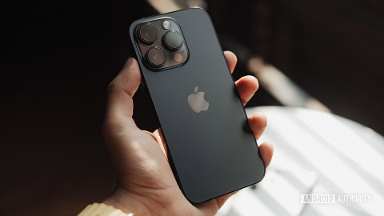

Az iPhone egy érintőképernyős okostelefon-család, amelyet az Apple tervez és forgalmaz. Az iPhone-ok minden generációja az Apple iOS operációs rendszerét használja. Az iPhone első generációját 2007. június 29-én mutatták be, azóta számos új hardware változat került piacra, új iOS frissítésekkel. A legfrissebb változata az iPhone 15, amelyet 2023. szeptember 15-én jelentettek be és szeptember 22-étől kapható.

Az iPhone-ra számtalan alkalmazást (app vagy application) tudunk letölteni az App Store-on keresztül. Az App Store 2008 közepén indult, és 2012-ig több mint félmillió, az Apple által jóváhagyott alkalmazás közül válogathatunk. Az alkalmazások különböző funkciókkal rendelkeznek, illetve különböző alkategóriákba sorolják őket, például játékok, Reference (ahol e-könyveket találhatunk), GPS-navigáció, közösségi szolgáltatások, biztonság.